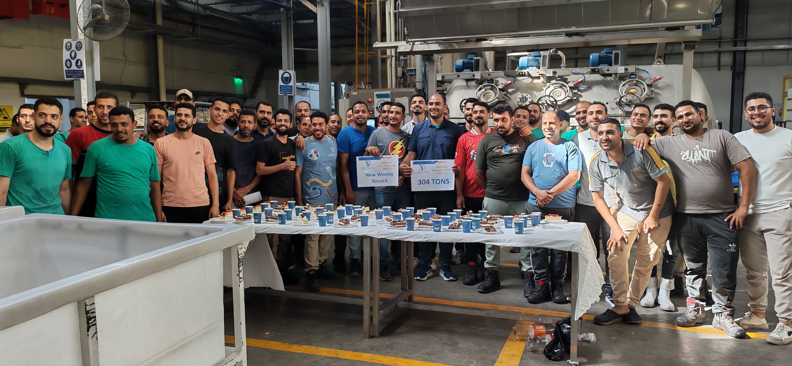
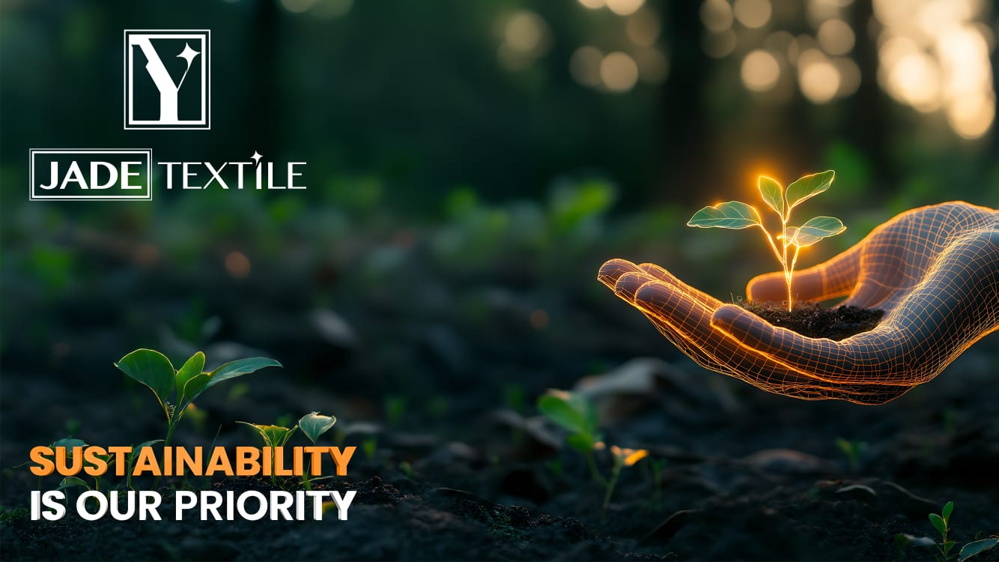
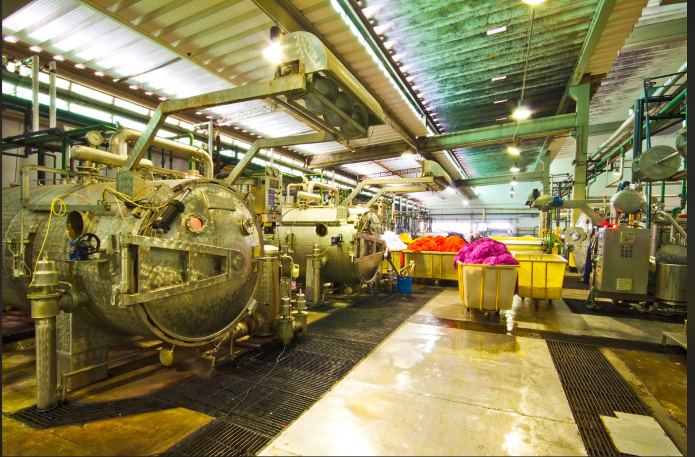

12 Operational Sub-Systems
Dye House Production & Operations System
بوابة الأنظمة الرقمية وشيتات المتابعة والتشغيل اللحظية لجميع أقسام ومراحل الصباغة والتجهيز.
Dye House Sub-Systems 12 أنظمة
اختر النظام للوصول الفوري للشيت المخصص له ومتابعة العمليات اليومية

System 01 Planning System 02
Raw Fabric
System 02
Raw Fabric
 System 03
Pre-Treatment
System 03
Pre-Treatment

System 04 Lab & Testing
System 05
Chemicals

System 06 Dyeing Ops System 07
Drying Ops
System 07
Drying Ops
System 08
Heat Setting
 System 09
Compactor
System 09
Compactor
 System 10
Quality Audit
System 10
Quality Audit
 System 11
Packaging
System 11
Packaging

لم يتم العثور على أي نظام يطابق بحثك
تأكد من كتابة اسم النظام أو التصنيف بشكل صحيح، أو اضغط على زر "الكل"
Main Dye House Live View
Jade Textile Ismailia - Continuous Data Sync
يمكنك التمرير داخل الجدول وتعديل العرض لمتابعة التحديثات اللحظية.